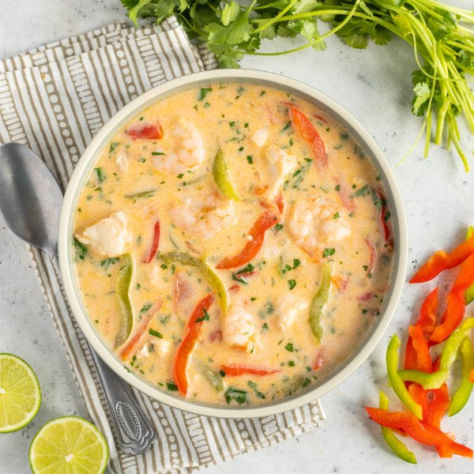

Brazilian Seafood Stew (Moqueca) with Shrimp, Cod, Bell Pepper & Lime

Nutrition (per serving)
683.1 kcalCalories
41.6 gProtein
31 gCarbs
47.2 gFat
Full nutrition table
| Calories | 683.1 kcal |
| Total fat | 47.2 g |
| Saturated fat | 39.8 g |
| Trans fat | 0.1 g |
| Cholesterol | 196.2 mg |
| Sodium | 1067.8 mg |
| Carbohydrates | 31 g |
| Fiber | 6.8 g |
| Sugars | 17.8 g |
| Protein | 41.6 g |
| Potassium | 1654.7 mg |
| Calcium | 135 mg |
| Iron | 3.5 mg |
| Vitamin A | 1487.5 IU |
| Vitamin C | 158.1 mg |
| Vitamin D | 25 IU |
Cookware
Ingredients
- 16 fl ozchicken or vegetable broth
- 1 small bunchcilantro
- 2 (13.5 fl oz) canscoconut milk
- 1 lbcod fillet
- 4 clovesgarlic
- 2green bell peppers
- 2limes
- 1 lbraw peeled shrimp, fresh or frozen
- 2red bell peppers
- 4tomatoes
- 1 mediumyellow onion
- black pepper
- chili-garlic sauce
- salt
- virgin coconut oil
Steps
- Wash and dry the fresh produce.2 limes
2 red bell peppers
2 green bell peppers
4 tomatoes
1 small bunch cilantro - Zest limes into a medium bowl. (Reserve limes for later use.)
- Peel and mince garlic; add to the bowl with the lime zest along with chili-garlic sauce, salt, and pepper. Stir to combine the marinade.4 cloves garlic
2 tsp chili-garlic sauce
½ tsp salt
¼ tsp black pepper - If using frozen shrimp, place them in the colander and run under cold water to thaw them slightly and remove any ice crystals. (If using fresh shrimp, skip this step.) Place the shrimp on a clean towel or paper towels and pat dry; add to the bowl with the marinade.1 lb raw peeled shrimp, fresh or frozen
- Pat the cod dry with paper towels and cut into 1-inch pieces; add to the bowl and gently stir to coat. Set aside.1 lb cod fillet
- Using a clean cutting board, trim, seed, and halve bell peppers crosswise, then slice into thin strips; place in another medium bowl.
- Preheat a large pot over medium heat.
- While the pot heats up, peel, halve, and small dice onion; add to the bowl with the bell pepper.1 medium yellow onion
- Once the pot is hot, add oil and swirl to coat the bottom; add veggies and salt. Cook, stirring occasionally, until starting to soften, about 3 minutes.4 tsp virgin coconut oil
½ tsp salt - While the veggies are cooking, medium dice tomatoes.
- Add tomatoes and broth to the pot; stir to combine and bring to a boil over medium-high heat. Once boiling, reduce heat to medium and simmer, stirring occasionally, until veggies are soft, 3-4 minutes.16 fl oz (2 cups) chicken or vegetable broth
- Meanwhile, shave cilantro leaves off the stems; discard stems and mince the leaves.
- Add marinated seafood and coconut milk to the pot; stir to combine, return to a simmer, and continue to cook until seafood is cooked through, 1 minute more.2 (13.5 fl oz) cans coconut milk
- When the stew is done, juice reserved limes into the pot, add cilantro, and gently stir to combine; remove from heat.
- To serve, divide seafood stew between bowls and enjoy!